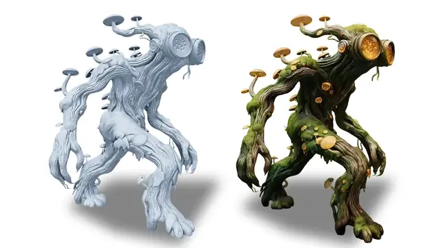
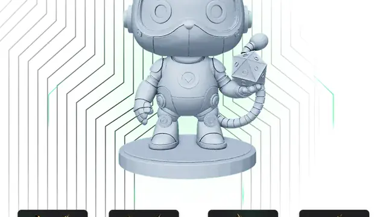

Hi3D open-sources Sparc3D as V1.0: the production-tested 3D model, now free to use
- Who: Hi3D, the team behind the Sparc3D 3D-generation model
- What: open-source release of Hi3D V1.0 (formerly Sparc3D) — source code and model weights public
- When: announced October 23, 2026 (PR Newswire, Beijing dateline)
- Training data: expanded from roughly 500,000 to two million curated 3D assets
- Geometry: progressive geometry reconstruction up to an effective sparse-grid resolution of 1536³; the company reports the highest multi-view fidelity and detail richness in its evaluation, plus a 90% slicing success rate
- Cost: credit consumption cut by over 50% alongside the open-source release
- Also announced: Hi3D V3.0 (commercial, 2048³ voxel resolution), the Hi3D Agent creator tool, and Hi3D MCP integration
Hi3D today open-sourced Hi3D V1.0, the release of the AI 3D model formerly known as Sparc3D, making the production-tested model available to developers, researchers, and enterprises. The announcement, dated Beijing, October 23, 2026, puts the source code and model weights online — and anyone can generate 3D models for free on the official Hi3D website. (PR Newswire)
Sparc3D gained recognition in 2025 for its high-resolution 3D geometry modeling. V1.0 is that model hardened by real use: Hi3D says it expanded the training dataset from approximately 500,000 to two million curated 3D assets and tested the model in real-world production workflows before opening it up.
What V1.0 brings
The headline spec is geometry. V1.0 extends progressive geometry reconstruction to an effective sparse-grid resolution of up to 1536³, and the team emphasizes structural consistency — preserving fine structures and keeping geometry coherent across multiple viewpoints.

Hi3D claims the release achieved the highest multi-view fidelity and detail richness scores in its reported evaluation, alongside a 90% slicing success rate — the latter a practical metric for the 3D printing pipeline. Alongside the code, the company cut credit consumption on its platform by over 50%, explicitly framing the move as lowering the barrier to 3D creation.
The targeted applications read like a checklist for physical-product work: 3D printing, product and e-commerce, industrial design, VR/AR/XR, and animation and film. Enterprises get private deployment options under the applicable license.
An agent layer on top
The open-source drop is one part of a wider play. The same announcement flags Hi3D V3.0 — described as the first commercially available AI 3D model with 2048³ voxel resolution — plus Hi3D Agent, a creator-first 3D agent that combines large language model reasoning and tool use with Hi3D’s proprietary 3D model, and Hi3D MCP integration so external agents and applications can call into Hi3D’s capabilities.

The announcement page points developers to a GitHub repository, a Hugging Face page, and a live demo on the official site. That makes Hi3D V1.0 one of the more complete open-source 3D releases to land this year: weights, code, and a free hosted path in the same announcement. (Morningstar / PR Newswire)
The deeper bet is legible: 3D generation has been stuck between expensive proprietary pipelines and research demos that never shipped. Hi3D is betting that a production-tested open model — with an agent wrapper and a credit-price cut — can pull creators off the closed stacks. Whether 1536³ geometry is enough to do it will now be tested in public, by anyone with a browser.
Frequently asked questions
What did Hi3D release today?
Hi3D V1.0, the open-source release of its Sparc3D 3D-generation model, announced on October 23, 2026. The source code and model weights are public, and anyone can generate 3D models for free on the official Hi3D website.
How does V1.0 differ from the Sparc3D that gained recognition in 2025?
The training dataset grew from roughly 500,000 to two million curated 3D assets, the model was tested in real production workflows, and it extends progressive geometry reconstruction to an effective sparse-grid resolution of up to 1536³. Hi3D reports the highest multi-view fidelity and detail richness scores in its evaluation, plus a 90% slicing success rate.
Is it free, and where can developers get it?
Yes. Alongside the open-source release, Hi3D cut platform credit consumption by over 50%. The announcement points developers to a GitHub repository, a Hugging Face page, a live demo, and free generation on the official Hi3D website. Hi3D V3.0, by contrast, is positioned as the commercial product with 2048³ voxel resolution.